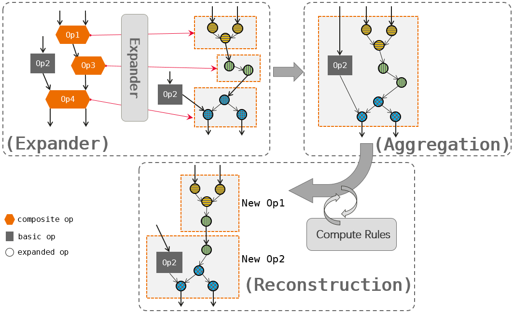
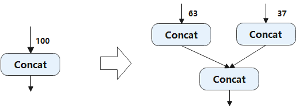
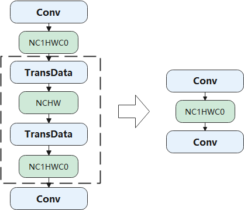

Graph Optimization¶
Graph optimization techniques at the backend primarily focus on hardware-oriented approaches. These techniques can be categorized as hardware-agnostic, such as memory I/O optimization, or specific to particular hardware, such as subgraph transformation to accommodate hardware instruction restrictions.
Hardware-Agnostic Optimizations¶
Hardware-agnostic optimizations involve subgraph transformation, which replaces a subgraph in a computational graph with a hardware-friendly equivalent.
One example of such optimization is memory I/O optimization. In deep learning models, operators can be categorized as either compute-intensive (e.g., Conv and FC) or memory-intensive (e.g., ReLU and element-wise Sum). Memory-intensive operators are mainly used for element-wise operations. Often, both types of operators are used together in a typical deep learning model, such as the combination of “Conv + ReLU”. By fusing ReLU and Conv into a composite operator, we can reduce memory access latency, bandwidth pressure, and improve execution efficiency.
Figure ch07/ch07-compiler-backend-03 illustrates an example
of fusing “Conv + Conv + Sum + ReLU”. This fusion optimization
eliminates two read operations and two write operations, optimizing the
read and write of the outputs generated by Conv and Sum.

Element-wise operatorfusion¶
Furthermore, automatic operator generation technology enables more flexible general optimizations in addition to fusion-based optimizations for specific operator types. An example of this technology is graph kernel fusion (available on AI frameworks such as TensorFlow and MindSpore). It aims to reduce inefficient memory movements and enable intensive computing through three steps: operator expansion, aggregation, and reconstruction.
Figure ch07/ch07-compiler-backend-graph-kernel provides an
overview of graph kernel fusion, which involves the following steps:
Expander: Composite operators (Op1, Op3, and Op4) in the computational graph are expanded into combinations of basic operators, as represented by the graph nodes with dash lines.
Aggregation: The basic operator (Op2) and expanded operators are aggregated into larger operator combinations.
Reconstruction: The basic operators are classified based on the input-to-output affinity, such as elemwise, broadcast, reduce, and transform. This classification allows the derivation of general compute rules (e.g., elemwise + reduce) to facilitate efficient execution. The operator combination is then analyzed and filtered iteratively, leading to the creation of new operators (New Op1 and New Op2) through reconstruction. These new operators are designed to be hardware-friendly.
Graph kernel fusion enables joint optimization beyond operator boundaries by expanding and aggregating the computational graph. It generates new hardware-friendly operators through reconstruction based on general compute rules, thereby facilitating efficient execution. However, it should be noted that this approach involves additional memory movements.

Graph kernelfusion¶
Hardware-Specific Optimizations¶
Hardware-specific optimizations are tailored to address the restrictions imposed by specific hardware instructions and memory formats associated with particular hardware devices.
Hardware Instruction Restrictions¶
Hardware instruction restrictions arise when certain IR nodes lack
direct operator counterparts on a specific hardware device. In such
cases, subgraph transformation can be employed to overcome these
restrictions. Let’s consider an example. The Concat operator on the
accelerator supports a maximum of 63 inputs. If the Concat node in the
frontend IR exceeds this limit, we can partition the node into multiple
smaller Concat nodes. Figure ch07/ch07-compiler-backend-04
illustrates how we can split a 100-input Concat node into two smaller
nodes, one with 63 inputs and the other with 37 inputs, to meet the
63-input requirement of the accelerator.

Partitioning of the Concatoperator¶
Memory Format Restrictions¶
Different platforms define varying formats for different operators to achieve optimal performance. When the formats are inconsistent with a particular framework, a common approach is to insert format transformation operations to reformat the operator output. However, this introduces additional memory movements.
Figure ch07/ch07-compiler-backend-05 provides an example to
illustrate this scenario. Consider that the default format in an AI
framework is NCHW, but the hardware accelerator is optimized for
performing convolution with inputs and outputs in NC1HWC0 format. To
bridge this gap, the output of the first Conv operator is formatted to
NCHW using a TransData operator. It is then reformatted to NC1HWC0 using
another TransData operator before being passed to the next Conv
operator. The two TransData operations (depicted as dashed lines in the
figure) are inverse operations of each other. By employing pattern
matching on the computational graph, such operations can be easily
eliminated.

Elimination of format transformationoperations¶